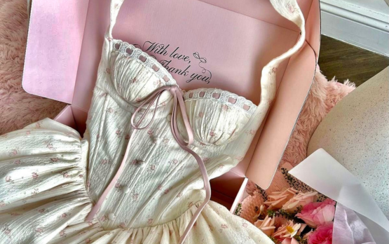
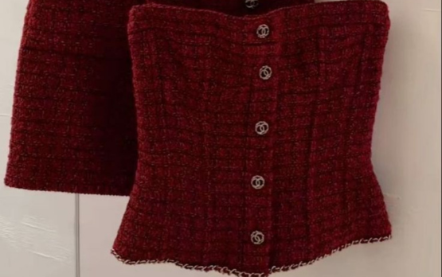
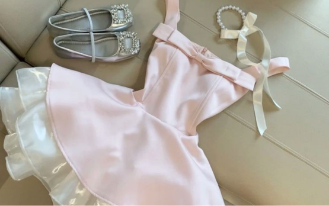
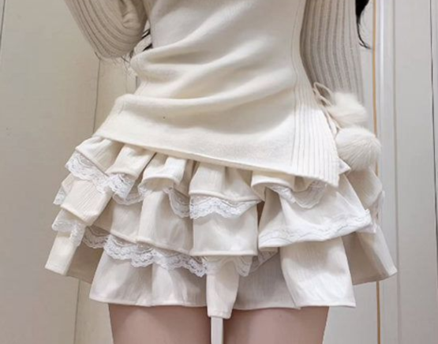

Cotton Candy Clothing Store
Cotton Candy Clothing Store
 Cotton Candy Clothing Store
Cotton Candy Clothing Store
Cotton Candy Clothing Store nace de la amistad, la creatividad y el amor por la moda femenina. Somos un emprendimiento mexicano creado por Kim y Andrea, dos amigas que encontraron en la ropa una forma de expresar emociones, personalidad y estilo. La idea surgió al notar que muchas mujeres buscan prendas que se sientan especiales: delicadas, coquetas, suaves, pero con carácter. Así como el algodón de azúcar, nuestra ropa combina dulzura, color y un toque único que hace sentir cómoda y segura a quien la usa. Cada prenda está pensada para resaltar la feminidad desde diferentes estilos: romántico, moderno, casual o atrevido. Queremos que te mires al espejo y digas “esto va conmigo”.
Crear ropa que conecte contigo, que te acompañe en tu día a día y que te permita expresar quién eres sin decir una sola palabra. Queremos que vistas lo que sientes.


Ofrecer prendas con diseños cuidados, actuales y versátiles, inspiradas en tendencias suaves, colores delicados y siluetas que enamoran. Buscamos que cada colección tenga ese equilibrio entre lo lindo, lo cómodo y lo auténtico.
Creemos que la ropa bonita también debe sentirse bien. Por eso cuidamos los materiales y los detalles, para que cada prenda sea cómoda, duradera y te haga sentir increíble al usarla.


Diseños con intención
Cada prenda está pensada con cariño y creatividad, inspirada en
estilos femeninos, dulces y modernos.
Comodidad y estilo
Ropa que no solo se ve bien, sino que se siente bien, ideal para
cualquier momento.
Identidad
En Cotton Candy Clothing Store no solo vendemos ropa, creamos un estilo que
refleja personalidad, seguridad y autenticidad.

Dueña
Dueña